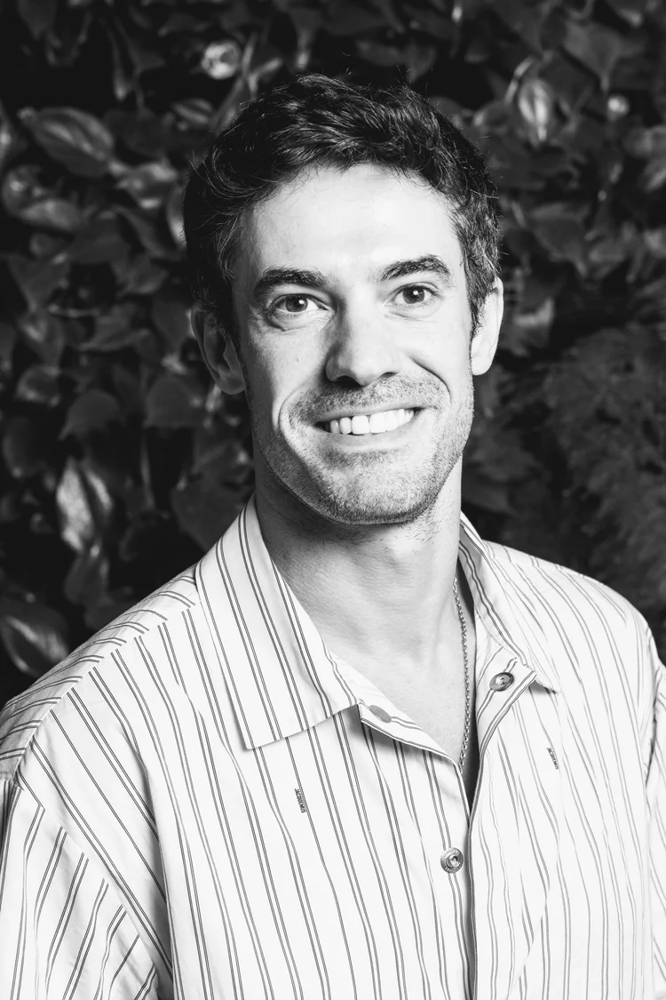
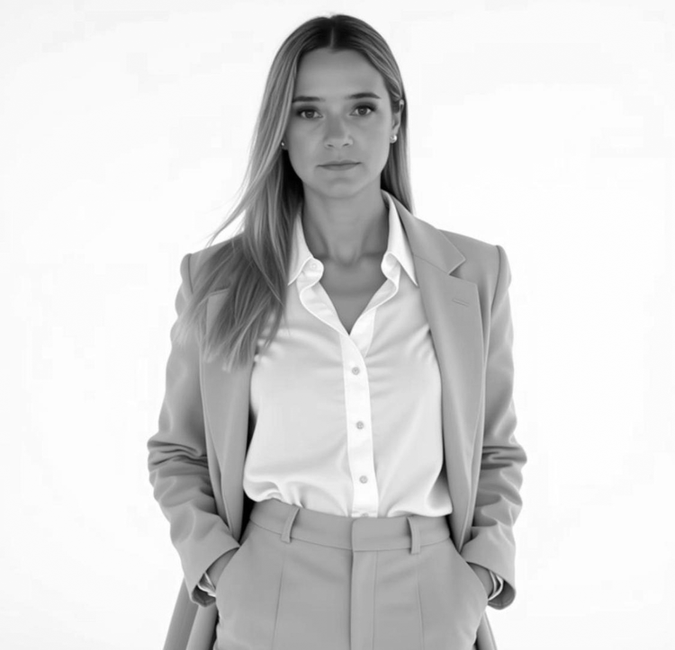
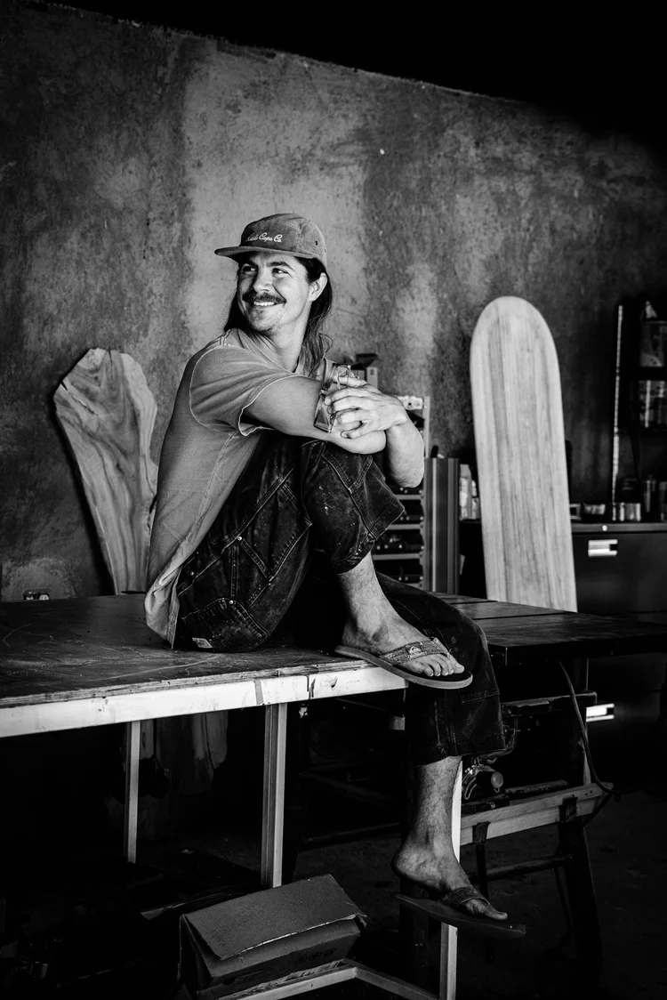
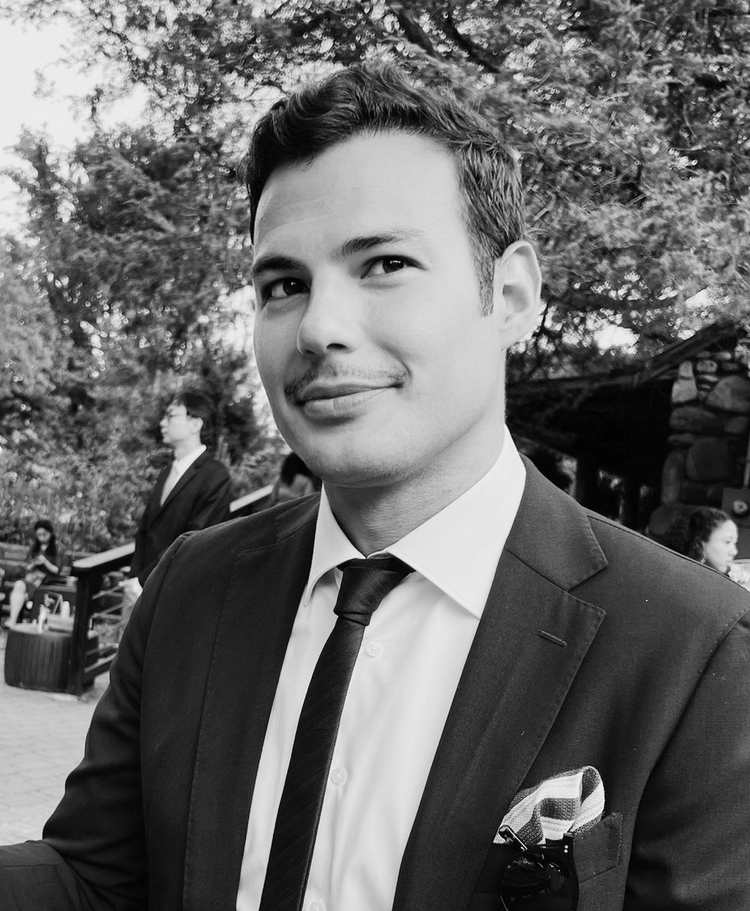

Abono surge de las ganas de construir un Norte en común entre un grupo de amigos que nacimos en Tacuarembó. La vida nos llevó por diferentes caminos. Hoy nos volvimos a unir para germinar una semilla.
Abono surge de las ganas de construir un Norte en común entre un grupo de amigos que nacimos en Tacuarembó.
La vida nos llevó por diferentes caminos, algunos migramos a diferentes partes del mundo, algunos lo hicimos dentro de Uruguay, y otros seguimos viviendo en Tacuarembó. Hoy nos volvimos a unir para germinar una semilla.
Decidimos hacer un proyecto que pudiera servir de abono a la generación y promoción de un mundo más inclusivo, menos injusto e igualitario.
Somos un grupo de jóvenes con formaciones diversas que abarca desde áreas de salud, ciencias sociales, diseño, política, negocios a ingeniería en computación y química.
Abono es una organización sin fines de lucro que busca la construcción de un mundo más justo e igualitario a través de la educación, la difusión de ideas transformadoras y la generación de oportunidades para potenciar diferentes capacidades/aprendizajes.
Su accionar se centra en la ejecución de acciones concretas con potencial transformador en el individuo y su entorno cercano, diseñadas desde un abordaje colectivo y teniendo como motor las ganas de aportar un granito de arena hacia la construcción de un mundo mejor.
Personas con formaciones diversas unidas por un propósito común.

Sebastián nació en Tacuarembó, Uruguay, en 1988. Es Ingeniero en Sistemas por la Universidad ORT Uruguay y cuenta con un MBA de Duke University – The Fuqua School of Business.
Actualmente se desempeña como Cloud Consultant en Google NYC, acompañando a clientes de IA en el diseño e implementación de soluciones basadas en la nube. Es cofundador de Pindata, una empresa de impacto social enfocada en la educación tecnológica, y presidente de la Fundación Abono.
Es fundador de sebasync. Sus prácticas profesionales y físicas conviven como expresiones complementarias de exploración, presencia y evolución continua.

Antonella nació el 15 de septiembre de 1988 en Tacuarembó. Estudió en la escuela número 2 Victoria Frigerio, Liceo número 3 y número 1 de Tacuarembó. Es Licenciada egresada de la Universidad Católica del Uruguay.
Trabajó en el área de la salud desde 2009 para luego centrarse en recursos humanos y formación profesional, fundando Alois en 2014. Socia directora de Alois.

Nacido en Tacuarembó en 1989, Santiago cursó sus estudios en el Colegio San Javier, la Escuela N°2 Victoria Frigerio y los Liceos N°3 y N°1 de su ciudad natal. Se graduó en Diseño Gráfico en Don Bosco.
Desde 2012 ha desarrollado una trayectoria internacional que lo llevó a residir en Nueva Zelanda, Australia, Indonesia, Samoa, Estados Unidos y México. Actualmente lidera Kodama Studio en Todos Santos, Baja California Sur. Cofundador de sebasync.

Fernando nació en Montevideo en Febrero de 1987. Vivió su infancia entre Montevideo, New York, y Buenos Aires. Tiene un BA en Psicología de New York University y estudios terciarios en Biotecnología de Columbia University.
Es fotógrafo profesional — ha trabajado con marcas como We The Urban, Diesel, y Macy's. Se graduó de New York Vocal Coaching en 2020. Es fundador y director de The Harmonyc Group, empresa de Marketing Digital en NYC enfocada en UX, branding, y automatización de procesos.